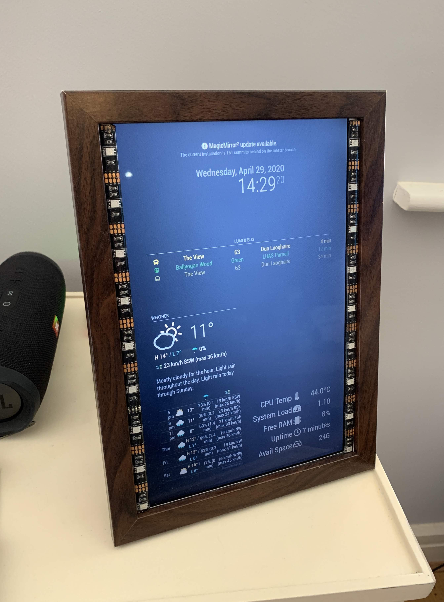
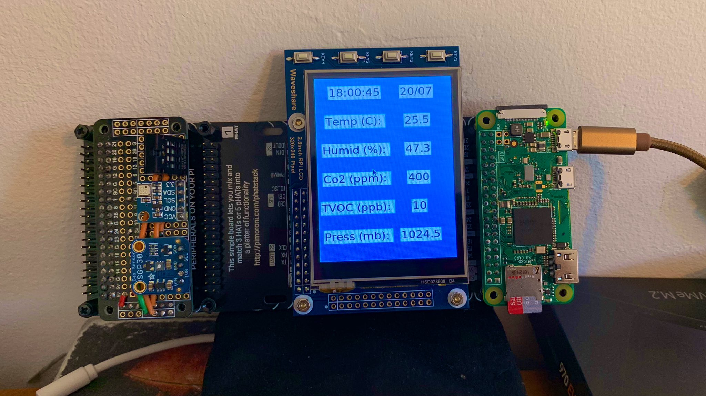

MY BLOG
Welcome to the blog of Sam

Magic Frame
Here is my attempt at the Magic Mirror project, September 22, 2020
Work in progress...

Sensor Project
Project to recored different sensor data, September 22, 2020
Work in Progress!

Sam
Welcome to my project blog! Here is where I post how I made some of my Raspberry pi and microcontrollers projects. Hopefully they are of some help.